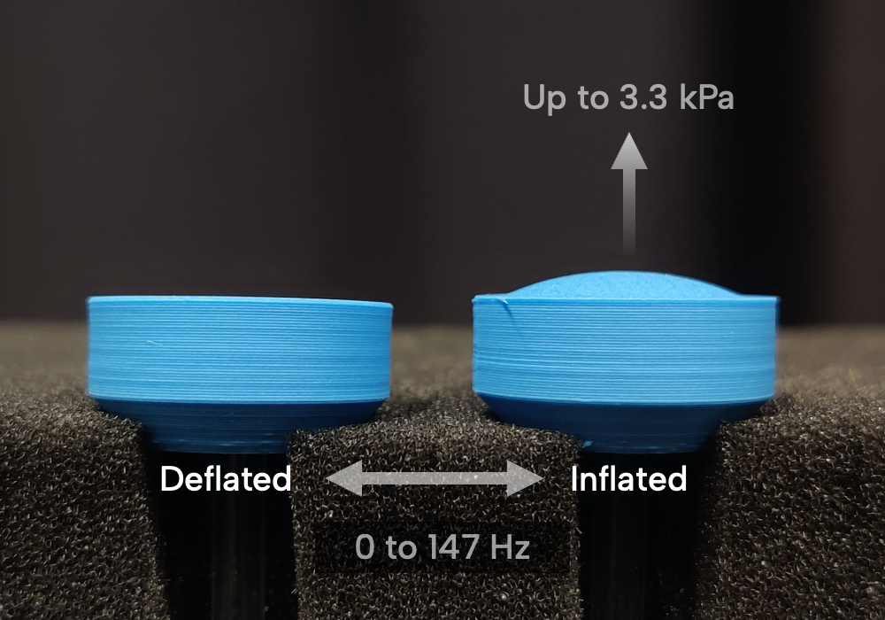

Post-Stroke Finger Rehabilitation
Restoring Dexterity with Multisensory Feedback
Overview
Haptic interface to provide both pressure and vibration to the same location on the skin.
Advisor
Breadth
Timeline
January 2024 to Present
Academic Output
BMES - Abstract

Background
Post-Stroke Hemiparesis
Post-stroke hemiparesis, a condition characterized by weakness or partial paralysis on one side of the body, affects 1 in 4 adults globally, profoundly impacting independence and quality of life. This impairment arises from disrupted neural pathways controlling motor function, often leading to difficulties in performing basic tasks like walking, eating, or dressing. Among the most challenging consequences is the loss of fine motor control in the fingers, which is critical for precision tasks such as grasping and manipulating objects. The diminished dexterity not only limits daily functionality but also hinders effective rehabilitation, underscoring the need for targeted therapies to restore hand and finger movement.
Current Approaches
Rehabilitation Now
Current rehabilitation approaches for post-stroke hemiparesis often emphasize motor retraining using assistive devices and repetitive task-based exercises. These methods predominantly rely on visual feedback to guide movements and monitor progress. However, while vision can help patients understand their performance, it is insufficient for optimizing motor recovery. Visual feedback alone fails to fully engage somatosensory pathways, which are crucial for neuroplasticity and regaining fine motor control. This limitation highlights the need for multimodal feedback systems that incorporate touch-based cues to enhance the effectiveness of rehabilitation and better support sensorimotor recovery.
My Approach
The HAND
I have been working on the Hand Articulation and Neurotraining Device (HAND) is a versatile rehabilitation tool designed to study and improve fine motor control, particularly in stroke recovery. It features advanced force-sensing capabilities, allowing for precise measurement of three-dimensional fingertip forces using silicone cups integrated with planar strain sensors. This setup enables accurate monitoring of multidimensional finger interactions, critical for assessing motor function.
The HAND device integrates a virtual task that provides a dynamic environment for training and evaluation. A central visual feedback element, such as a variable-brightness sphere, allows users to gauge their performance by observing changes in light intensity corresponding to task success. This is complemented by haptic feedback, delivered through vibrating voice coils, which provide tactile cues directly to the user's fingers. Together, the visual and haptic feedback create a multimodal training experience, promoting neural plasticity and enhancing the recovery of motor skills.
Directions
Specific Hypotheses
The HAND device explores the potential of multimodal feedback—integrating both visual and haptic cues—to enhance post-stroke rehabilitation outcomes. In a study with 10 healthy participants, incorporating haptic feedback alongside visual feedback during task-based training led to a 27% improvement in motor outcomes compared to visual feedback alone. This result underscores the critical role of somatosensory engagement in promoting neuroplasticity and regaining fine motor skills. By precisely measuring three-dimensional fingertip forces at high resolution (2mN, 10 kHz sampling rate), the HAND device provides detailed insights into motor function and recovery dynamics, paving the way for advanced rehabilitation strategies.
BMES - AbstractAdditionally, my work validates the importance of personalizing feedback to individual sensory preferences, which can vary widely among stroke survivors. Using a cross-modal matching approach, I tailored visual and haptic feedback for 12 healthy participants, accounting for differences in sensory perception. These findings demonstrate that personalized multimodal feedback can enhance user engagement and optimize therapeutic efficacy. By addressing the variability in sensory experiences, the HAND device offers a more adaptable and effective rehabilitation solution, aiming to improve outcomes for individuals recovering from post-stroke hemiparesis.